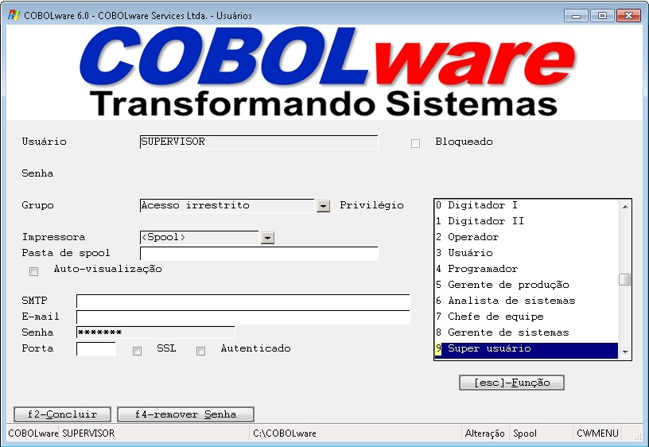
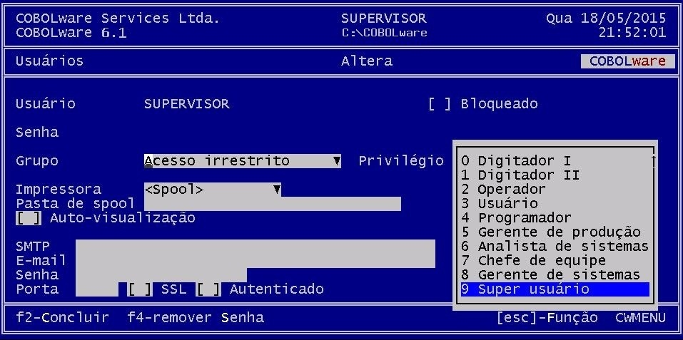

Cadastramento de usuários.
|
Modo gráfico |
|
 |
|
Modo texto |
|
 |
Usuário
Identificação do usuário. Será
solicitada no momento do logon.
Bloqueado
Permite
o bloqueio e desbloqueio de acesso do usuário ao
sistema.
Senha
Senha temporária, é derivada da
senha real gerada pelo gerenciador mas que tem validade de apenas uma
hora, tem por finalidade permitir, em casos de emergência, que
um usuário forneça uma senha para acesso possibilitando
a solução do problema
Grupo
Grupo
ao qual o usuário deve ser vinculado. O gerenciador irá
aplicar as restrições definidas neste grupo no momento
de construir o menu para o usuário.
Privilégio
Nível
de privilégio do usuário. Somente as opções
de configuração
do gerenciador pertinentes ao nível de privilégio
do usuário estarão
disponíveis.
Impressora
Desabilita
o recurso de spool
para o usuário, direcionando os relatórios diretamente
para a impressora
selecionada.
Pasta de spool
Determina
qual pasta dever ser utilizada para armazenagem dos relatórios
gerados pelo usuário em spool.
Auto-visualização
Habilita
a visualização automática de relatórios
gerados em spool.
Desta forma um relatório é exibido na tela assim que é
emitido.
SMTP
Servidor de
SMTP que deve ser utilizado pelo spool
no envio de relatórios por e-mail.
E-mail/Senha
Endereço
de e-mail e senhas que devem ser utilizados como remetente e para
identificação no servidor SMTP pelo spool
no envio de relatórios por e-mail.
Porta
Porta
alternativa para o servidor SMTP.
SSL
Indica
se o servidor SMTP requer conexão segura
SSL.
Autenticado
Indica se
o servidor SMTP requer autenticação..